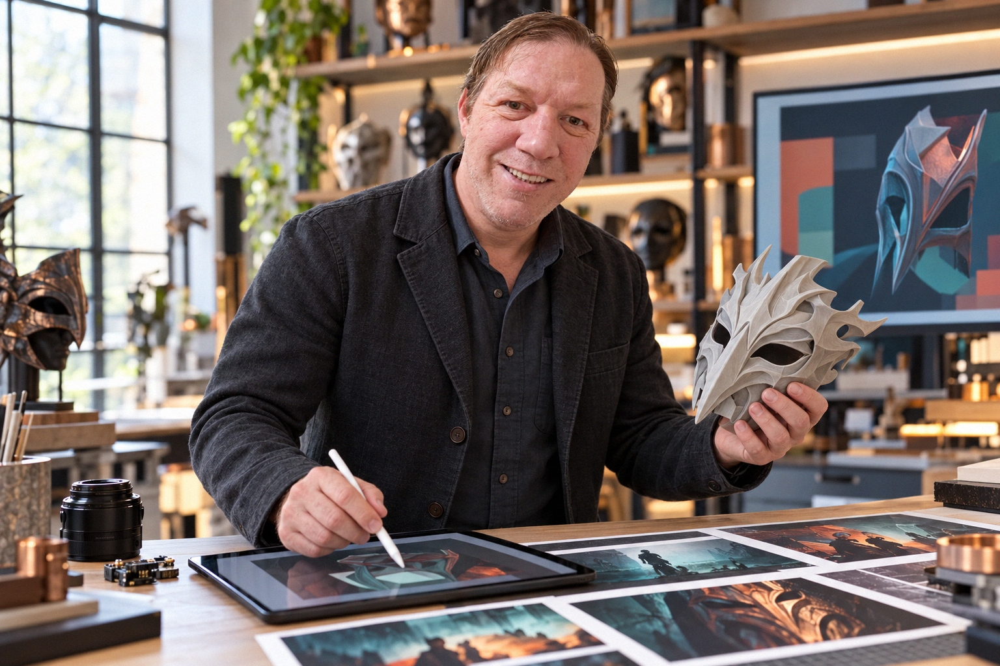

01
STORY IN MOTION
Film & live worlds
Stories shaped for the screen, the stage, and the room full of people watching.
A maker’s journey through the moving image, the living circuit, and the things we bring to life by hand.
ONE CREATIVE LIFE. MANY MEDIUMS.
For about a decade, my world was the entertainment industry: films, television, live concerts, writing, and more venues than I could ever name.
Then curiosity led me back to the classroom. Through collegiate studies with Ohio University, Harvard, and MIT, I explored electrical engineering and programming—and found new ways to build, experiment, and imagine.
Independent development opened the door to games and software. Electronics and robotics kept calling. And all along, my artistic roots were waiting for their next medium.
The story keeps taking shape. ✳
NOT A STRAIGHT LINE. A CONSTELLATION.
Different disciplines, one instinct: follow the idea until it becomes something real.
Stories shaped for the screen, the stage, and the room full of people watching.
Games, software, electronics, and the beautiful problem of making things work.
Mythic Mask Works is a partnership in making—where imagination takes physical form.
MYTHIC MASK WORKS, LLC
A creative partnership built around arts, crafts, and independent making.
3D printing has opened a new door: a chance to prototype, play, and explore without needing a factory to make an idea real. It’s a tool for the same impulse that’s been here all along—to create, to experiment, and to share the result.
Come find the work wherever it appears. I hope something here sparks an idea of your own.
Follow the work ↗METCHELYN BAKER
Managing Member & Chief Financial Officer
Mythic Mask Works, LLC

ILLUSTRATIVE SCENE · CREATIVE DIRECTION ART · TECHNOLOGY · IMAGINATIONBRIAN FOX · THE CREATIVE DIRECTOR
Creative direction, visual storytelling & independent making
Mythic Mask Works, LLC
04 / UNTIL THE NEXT IDEA
Thanks for spending a moment in my world.
Enjoy, and God bless.
— Brian Fox
Back to the beginning ↑